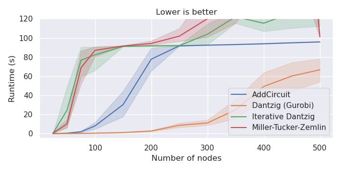
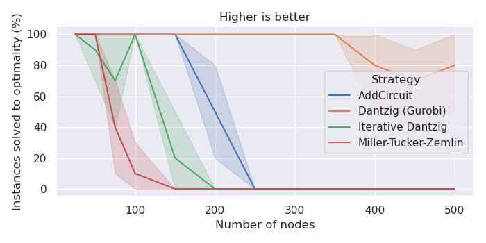
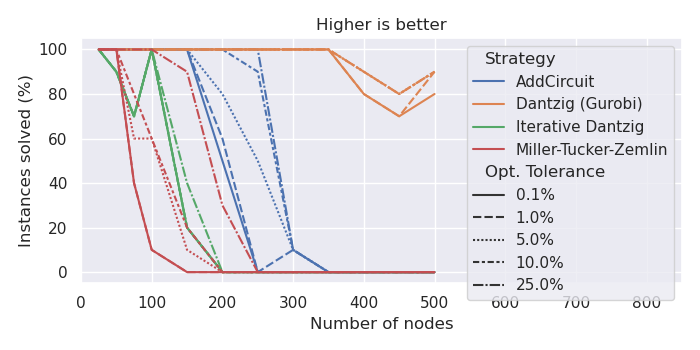
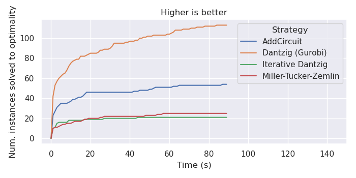
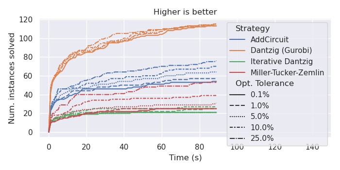
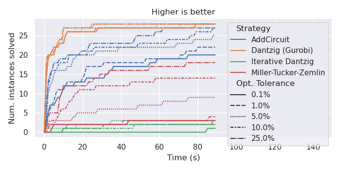

Benchmarking your Model
Benchmarking is an essential step if your model isn't yet meeting the performance standards of your application or if you're aiming for an academic publication. This process involves analyzing your model's performance, especially important if your model has adjustable parameters. Running your model on a set of predefined instances (a benchmark) allows you to fine-tune these parameters and compare results. Moreover, if alternative models exist, benchmarking helps you ascertain whether your model truly outperforms these competitors.
Designing an effective benchmark is a nuanced task that demands expertise. This section aims to guide you in creating a reliable benchmark suitable for publication purposes.
Given the breadth and complexity of benchmarking, our focus will be on the
basics, particularly through the lens of the Traveling Salesman Problem (TSP),
as previously discussed in the AddCircuit section. We refer to the different
model implementations as 'solvers', and we'll explore four specific types:
A solver employing the
AddCircuitapproach.A solver based on the Miller-Tucker-Zemlin formulation.
A solver utilizing the Dantzig-Fulkerson-Johnson formulation with iterative addition of subtour constraints until a connected tour is achieved.
A Gurobi-based solver applying the Dantzig-Fulkerson-Johnson formulation via Lazy Constraints, which are not supported by CP-SAT.
This example highlights common challenges in benchmarking and strategies to address them. A key obstacle in solving NP-hard problems is the variability in solver performance across different instances. For instance, a solver might easily handle a large instance but struggle with a smaller one, and vice versa. Consequently, it's crucial to ensure that your benchmark encompasses a representative variety of instances. This diversity is vital for drawing meaningful conclusions, such as the maximum size of a TSP instance that can be solved or the most effective solver to use.
For a comprehensive exploration of benchmarking, I highly recommend Catherine C. McGeoch's book, "A Guide to Experimental Algorithmics", which offers an in-depth discussion on this topic.
Distinguishing Exploratory and Workhorse Studies in Benchmarking
Before diving into comprehensive benchmarking, it’s essential to conduct preliminary investigations to assess your model’s capabilities and identify any foundational issues. This phase, known as exploratory studies, is crucial for establishing the basis for more detailed benchmarking, subsequently termed as workhorse studies. These latter studies aim to provide reliable answers to specific research questions and are often the core of academic publications. It's important to explicitly differentiate between these two study types and maintain their distinct purposes: exploratory studies for initial understanding and flexibility, and workhorse studies for rigorous, reproducible research.
Exploratory Studies: Foundation Building
Exploratory studies serve as an introduction to both your model and the problem it addresses. This phase is about gaining preliminary understanding and insights.
Objective: The goal here is to gather early insights rather than definitive conclusions. This phase is instrumental in identifying realistic problem sizes, potential challenges, and narrowing down hyperparameter search spaces.
For instance, in the AddCircuit-section, an exploratory study helped us
determine that our focus should be on instances with 100 to 200 nodes. If you
encounter fundamental issues with your model at this stage, it’s advisable to
address these before proceeding to workhorse studies.
Occasionally, the primary performance bottleneck in your model may not be CP-SAT but rather the Python segment where the model is being generated. In these instances, identifying the most resource-intensive parts of your Python code is crucial. I have found the profiler Scalene to be well-suited to investigate and pinpoint these bottlenecks.
Workhorse Studies: Conducting In-depth Evaluations
Workhorse studies follow the exploratory phase, characterized by more structured and meticulous approaches. This stage is vital for a comprehensive evaluation of your model and collecting substantive data for analysis.
Objective: These studies are designed to answer specific research questions and provide meaningful insights. The approach here is more methodical, focusing on clearly defined research questions. The benchmarks designed should be well-structured and large enough to yield statistically significant results.
Remember, the aim is not to create a flawless benchmark right away but to evolve it as concrete questions emerge and as your understanding of the model and problem deepens. These studies, unlike exploratory ones, will be the focus of your scientific publications, with exploratory studies only referenced for justifying certain design decisions.
Hint: Use the SIGPLAN Empirical Evaluation Checklist if your evaluation has to satisfy academic standards.
Designing a Robust Benchmark for Effective Studies
When undertaking both exploratory and workhorse studies, the creation of a well-designed benchmark is a critical step. This benchmark is the basis upon which you'll test and evaluate your solvers. For exploratory studies, your benchmark can start simple and progressively evolve. However, when it comes to workhorse studies, the design of your benchmark demands meticulous attention to ensure comprehensiveness and reliability.
While exploratory studies also benefit from a thoughtfully designed benchmark—as it accelerates insight acquisition—the primary emphasis at this stage is to have a functioning benchmark in place. This initial benchmark acts as a springboard, providing a foundation for deeper, more detailed analysis in the subsequent workhorse studies. The key is to balance the immediacy of starting with a benchmark against the long-term goal of refining it for more rigorous evaluations.
Ideally, a robust benchmark would consist of a large set of real-world instances, closely reflecting the actual performance of your solver. Real-world instances, however, are often limited in quantity and may not provide enough data for a statistically significant benchmark. In such cases, it's advisable to explore existing benchmarks from literature, like the TSPLIB for TSP. Leveraging established benchmarks allows for comparison with prior studies, but be cautious about their quality, as not all are equally well-constructed. For example, TSPLIB's limitations in terms of instance size variation and heterogeneity can hinder result aggregation.
Therefore, creating custom instances might be necessary. When doing so, aim for enough instances per size category to establish reliable and statistically significant data points. For instance, generating 10 instances for each size category (e.g., 25, 50, 75, 100, 150, 200, 250, 300, 350, 400, 450, 500) can provide a solid basis for analysis. This approach, though modest in scale, suffices to illustrate the benchmarking process.
Exercise caution with random instance generators, as they may not accurately represent real-world scenarios. For example, randomly generated TSP instances might lack collinear points common in real-world situations, like houses aligned on straight roads, or they might not replicate real-world clustering patterns. To better mimic reality, incorporate real-world data or use diverse generation methods to ensure a broader variety of instances. For the TSP, we could for example also have sampled from the larger TSPLIB instances.
Consider conducting your evaluation using two distinct benchmarks, especially when dealing with different data types. For instance, you might have one benchmark derived from real-world data which, although highly relevant, is too limited in size to provide robust statistical insights. Simultaneously, you could use a second benchmark based on a larger set of random instances, better suited for detailed statistical analysis. This dual-benchmark approach allows you to demonstrate the consistency and reliability of your results, ensuring they are not merely artifacts of a particular dataset's characteristics. It's a strategy that adds depth to your evaluation, showcasing the robustness of your findings across varied data sources. We will use this approach below, generating robust plots from random instances, but also comparing them to real-world instances. Mixing the two benchmarks would not be advisable, as the random instances would dominate the results.
Lastly, always separate the creation of your benchmark from the execution of experiments. Create and save instances in a separate process to minimize errors. The goal is to make your evaluation as error-proof as possible, avoiding the frustration and wasted effort of basing decisions on flawed data. Be particularly cautious with pseudo-random number generators; while theoretically deterministic, their use can inadvertently lead to irreproducible results. Sharing benchmarks is also more straightforward when you can distribute the instances themselves, rather than the code used to generate them.
Efficiently Managing Your Benchmarks
Managing benchmark data can become complex, especially with multiple experiments and research questions. Here are some strategies to keep things organized:
Folder Structure: Maintain a clear folder structure for your experiments, with a top-level
evaluationsfolder and descriptive subfolders for each experiment. For our experiment we have the following structure:evaluations ├── tsp │ ├── 2023-11-18_random_euclidean │ │ ├── PRIVATE_DATA │ │ │ ├── ... all data for debugging │ │ ├── PUBLIC_DATA │ │ │ ├── ... selected data to share │ │ ├── README.md: Provide a short description of the experiment │ │ ├── 00_generate_instances.py │ │ ├── 01_run_experiments.py │ │ ├── .... │ ├── 2023-11-18_tsplib │ │ ├── PRIVATE_DATA │ │ │ ├── ... all data for debugging │ │ ├── PUBLIC_DATA │ │ │ ├── ... selected data to share │ │ ├── README.md: Provide a short description of the experiment │ │ ├── 01_run_experiments.py │ │ ├── ....
Redundancy and Documentation: While some redundancy is acceptable, comprehensive documentation of each experiment is crucial for future reference.
Simplified Results: Keep a streamlined version of your results for easy access, especially for plotting and sharing.
Data Storage: Save all your data, even if it seems insignificant at the time. This ensures you have a comprehensive dataset for later analysis or unexpected inquiries. Because this can become a lot of data, it's advisable to have two folders: One with all data and one with a selection of data that you want to share.
Experiment Flexibility: Design experiments to be interruptible and extendable, allowing for easy resumption or modification. This is especially important for exploratory studies, where you may need to make frequent adjustments. However, if your workhorse study takes a long time to run, you don't want to repeat it from scratch if you want to add a further solver.
Utilizing Technology: Employ tools like slurm for efficient distribution of experiments across computing clusters, saving time and resources. The faster you have your results, the faster you can act on them.
Due to a lack of tools that exactly fitted my needs I developed AlgBench to manage the results, and Slurminade to easily distribute the experiments on a cluster via a simple decorator. However, there may be better tools out there, now, especially from the Machine Learning community. Drop me a quick mail if you have found some tools you are happy with, and I will take a look myself.
Analyzing the results
Let us now come to the actual analysis of the results. We will focus on the following questions:
Up to which size can we solve TSP instances with the different solvers?
Which solver is the fastest?
How does the performance change if we increase the optimality tolerance?
Our Benchmarks: We executed the four solvers with a time limit of 90s and the optimality tolerances [0.1%, 1%, 5%, 10%, 25%] on a random benchmark set and a TSPLIB benchmark set. The random benchmark set consists of 10 instances for each number of nodes [25, 50, 75, 100, 150, 200, > 250, 300, 350, 400, 450, 500]. The weights were chosen based on randomly embedding the nodes into a 2D plane and using the Euclidean distances. The TSPLIB benchmark consists of all euclidean instances with less than 500 nodes. It is critical to have a time limit, as otherwise, the benchmarks would take forever. You can find all find the whole experiment here.
Let us first look at the results of the random benchmark, as they are easier to interpret. We will then compare them to the TSPLIB benchmark.
Random Instances
A common, yet simplistic method to assess a model's performance involves plotting its runtime against the size of the instances it processes. However, this approach can often lead to inaccurate interpretations, particularly because time-limited cutoffs can disproportionately affect the results. Instead of the expected exponential curves, you will get skewed sigmoidal curves. Consequently, such plots might not provide a clear understanding of the instance sizes your model is capable of handling efficiently.
 |
|---|
The runtimes are sigmoidal instead of exponential because the time limit skews the results. The runtime can frequently exceed the time limit, because of expensive model building, etc. Thus, a pure runtime plot says surprisingly little (or is misleading) and can usually be discarded. |
To gain a more accurate insight into the capacities of your model, consider plotting the proportion of instances of a certain size that your model successfully solves. This method requires a well-structured benchmark to yield meaningful statistics for each data point. Without this structure, the resulting curve may appear erratic, making it challenging to draw dependable conclusions.
 |
|---|
For each x-value: What are the chances (y-values) that a model of this size (x) can be solved? |
Furthermore, if the pursuit is not limited to optimal solutions but extends to encompass solutions of acceptable quality, the analysis can be expanded. One can plot the number of instances that the model solves within a defined optimality tolerance, as demonstrated in the subsequent figure:
 |
|---|
For each x-value: What are the chances (y-values) that a model of this size (x) can be solved to what quality (line style)? |
For a comparative analysis across various models against an arbitrary benchmark, cactus plots emerge as a potent tool. These plots illustrate the number of instances solved over time, providing a clear depiction of a model's efficiency. For example, a coordinate of $x=10, y=20$ on such a plot signifies that 20 instances were solved within a span of 10 seconds each. It is important to note, however, that these plots do not facilitate predictions for any specific instance unless the benchmark set is thoroughly familiar. They do allow for an estimation of which model is quicker for simpler instances and which can handle more challenging instances within a reasonable timeframe. The question of what exactly is a simple or challenging instance, however, is better answered by the previous plots.
Cactus plots are notably prevalent in the evaluation of SAT-solvers, where instance size is a poor indicator of difficulty. A more detailed discussion on this subject can be found in the referenced academic paper: Benchmarking Solvers, SAT-style by Brain, Davenport, and Griggio
 |
|---|
For each x-value: How many (y) of the benchmark instances could have been solved with this time limit (x)? |
Additionally, the analysis can be refined to account for different quality tolerances. This requires either multiple experimental runs or tracking the progression of the lower and upper bounds within the solver. In the context of CP-SAT, for instance, this tracking can be implemented via the Solution Callback, although its activation is may depend on updates to the objective rather than the bounds.
 |
|---|
For each x-value: How many (y) of the benchmark instances could have been solved to a specific quality (line style) with this time limit (x)? |
Instead of plotting the number of solved instances, one can also plot the number of unsolved instances over time. This can be easier to read and additionally indicates the number of instances in the benchmark. However, I personally do not have a preference for one or the other, and would recommend using the one that is more intuitive to read for you.
TSPLIB
Our second benchmark for the Traveling Salesman Problem leverages the TSPLIB, a set of instances based on real-world data. This will introduce two challenges:
The difficulty in aggregating benchmark data due to its limited size and heterogeneous nature.
Notable disparities in results, arising from the differing characteristics of random and real-world instances.
The irregularity in instance sizes makes traditional plotting methods, like plotting the number of solved instances over time, less effective. While data smoothing methods, such as rolling averages, are available, they too have their limitations.
|
|---|
Such a plot may prove inefficient when dealing with high variability, particularly when some data points are underrepresented. |

In contrast, the cactus plot still provides a clear and comprehensive
perspective of various model performances. An interesting observation we can
clearly see in it, is the diminished capability of the "Iterative Dantzig" model
in solving instances, and a closer performance alignment between the
AddCircuit and Gurobi models.
 |
|---|
Cactus plots maintain clarity and relevance, and show a performance differences between TSPLib and random instances. |
However, since cactus plots do not offer insights into individual instances,
it's beneficial to complement them with a detailed table of results for the
specific model you are focusing on. This approach ensures a more nuanced
understanding of model performance across varied instances. The following table
provides the results for the AddCircuit-model.
Instance |
# nodes |
runtime |
lower bound |
objective |
opt. gap |
|---|---|---|---|---|---|
att48 |
48 |
0.47 |
33522 |
33522 |
0 |
eil51 |
51 |
0.69 |
426 |
426 |
0 |
st70 |
70 |
0.8 |
675 |
675 |
0 |
eil76 |
76 |
2.49 |
538 |
538 |
0 |
pr76 |
76 |
54.36 |
108159 |
108159 |
0 |
kroD100 |
100 |
9.72 |
21294 |
21294 |
0 |
kroC100 |
100 |
5.57 |
20749 |
20749 |
0 |
kroB100 |
100 |
6.2 |
22141 |
22141 |
0 |
kroE100 |
100 |
9.06 |
22049 |
22068 |
0 |
kroA100 |
100 |
8.41 |
21282 |
21282 |
0 |
eil101 |
101 |
2.24 |
629 |
629 |
0 |
lin105 |
105 |
1.37 |
14379 |
14379 |
0 |
pr107 |
107 |
1.2 |
44303 |
44303 |
0 |
pr124 |
124 |
33.8 |
59009 |
59030 |
0 |
pr136 |
136 |
35.98 |
96767 |
96861 |
0 |
pr144 |
144 |
21.27 |
58534 |
58571 |
0 |
kroB150 |
150 |
58.44 |
26130 |
26130 |
0 |
kroA150 |
150 |
90.94 |
26498 |
26977 |
2% |
pr152 |
152 |
15.28 |
73682 |
73682 |
0 |
kroA200 |
200 |
90.99 |
29209 |
29459 |
1% |
kroB200 |
200 |
31.69 |
29437 |
29437 |
0 |
pr226 |
226 |
74.61 |
80369 |
80369 |
0 |
gil262 |
262 |
91.58 |
2365 |
2416 |
2% |
pr264 |
264 |
92.03 |
49121 |
49512 |
1% |
pr299 |
299 |
92.18 |
47709 |
49217 |
3% |
linhp318 |
318 |
92.45 |
41915 |
52032 |
19% |
lin318 |
318 |
92.43 |
41915 |
52025 |
19% |
pr439 |
439 |
94.22 |
105610 |
163452 |
35% |
This should highlight that often you need a combination of different benchmarks and plots to get a good understanding of the performance of your model.
Conclusion
Benchmarking solvers for NP-hard problems is not as straightforward as it might seem at first. There are many pitfalls and often there is no perfect solution. On the example of the TSP, we have seen how we can still get some useful results and nice plots on which we can base our decisions.
If you want to make an automated decision on what model/solver to use, things can get complicated. Often, there is none that dominates on all instances. If you want a single metric for comparing the performance, there is no perfect solution. I am actually the technical lead and co-organizer of a yearly challenge on solving hard optimization problems in computational geometry CG:SHOP, which is part of CG Week. Here, I am confronted with scoring the solutions of the participants, without having any useful bounds. It turned out that giving a score between zero and one for each instance, based on the squared difference to the best solution, works quite well. While it still has flaws, it is showed to be relatively fair and robust. The general problem of selecting the right strategy for a specific instance is called Algorithm Selection problem and can be surprisingly complex, too.